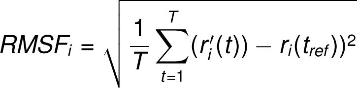

Supplementary information
● The Root Mean Square Deviation (RMSD) is used to measure the average
change in displacement of a selection of atoms for a particular frame with respect
to a reference frame. It is calculated for all frames in the trajectory. The RMSD for
frame x is:

where N is the number of atoms in the atom selection; tref is the reference time, (typically the first frame is used as the reference and it is regarded as time t=0); and r' is the position of the selected atoms in frame x after superimposing on the reference frame, where frame x is recorded at time tx. The procedure is repeated for every frame in the simulation trajectory.
● Protein RMSD: The plot shows the RMSD evolution of a protein (left Y-axis). All protein frames are first aligned on the reference frame backbone, and then the RMSD is calculated based on the atom selection. Monitoring the RMSD of the protein can give insights into its structural conformation throughout the simulation. RMSD analysis can indicate if the simulation has equilibrated — its fluctuations towards the end of the simulation are around some thermal average structure. Changes of the order of 1-3 Å are perfectly acceptable for small, globular proteins. Changes much larger than that, however, indicate that the protein is undergoing a large conformational change during the simulation. It is also important that your simulation converges — the RMSD values stabilize around a fixed value. If the RMSD of the protein is still increasing or decreasing on average at the end of the simulation, then your system has not equilibrated, and your simulation may not be long enough for rigorous analysis.
● Ligand RMSD: Ligand RMSD (right Y-axis) indicates how stable the ligand is with respect to the protein and its binding pocket. In the above plot, 'Lig fit Prot' shows the RMSD of a ligand when the protein-ligand complex is first aligned on the protein backbone of the reference and then the RMSD of the ligand heavy atoms is measured. If the values observed are significantly larger than the RMSD of the protein, then it is likely that the ligand has diffused away from its initial binding site. 'Lig fit Lig' shows the RMSD of a ligand that is aligned and measured just on its reference conformation. This RMSD value measures the internal fluctuations of the ligand atoms.
● The Root Mean Square Fluctuation (RMSF) is useful for characterizing local changes along the protein chain. The RMSF for residue i is: 
where T is the trajectory time over which the RMSF is calculated, tref is the reference time, ri is the position of residue i; r' is the position of atoms in residue i after superposition on the reference, and the angle brackets indicate that the average of the square distance is taken over the selection of atoms in the residue. On this plot, peaks indicate areas of the protein that fluctuate the most during the simulation. Typically you will observe that the tails (N- and C-terminal) fluctuate more than any other part of the protein. Secondary structure elements like alpha helices and beta strands are usually more rigid than the unstructured part of the protein, and thus fluctuate less than the loop regions.
● B factors: The RMSF of the protein can also be correlated with the experimental x-ray B-factor (right Y-axis).Due to the difference between the RMSF and B-factor definitions, one-to-one correspondence should not be expected. However, the simulation results should parallel the crystallographic data
●The Ligand Root Mean Square Fluctuation (L-RMSF) is useful for characterizing changes in the ligand atom positions. The RMSF for atom i is: where T is the trajectory time over which the RMSF is calculated, tref is the reference time (usually for the first frame, and is regarded as the zero of time); r is the position of atom i in the reference at time tref, and r' is the position of atom i at time t after superposition on the reference frame. Ligand RMSF shows the ligand's fluctuations broken down by atom, corresponding to the 2D structure in the top panel. The ligand RMSF may give you insights on how ligand fragments interact with the protein and their entropic role in the binding event. In the bottom panel, the 'Fit Ligand on Protein' line shows the ligand fluctuations, with respect to the protein. The protein-ligand complex is first aligned on the protein backbone and then the ligand RMSF is measured on the ligand heavy atoms. 'Ligand' line shows fluctuations where the ligand in each frame is aligned on the ligand in the reference frame, and its fluctuations are measured for the ligand heavy atoms. These RMSF values reflect the internal atom fluctuations of the ligand.
Protein interactions with the ligand can be monitored throughout the simulation. These interactions can be categorized by type and summarized, as shown in the plot above.
Protein-ligand interactions (or 'contacts') are categorized into four types: Hydrogen Bonds, Hydrophobic, Ionic and Water Bridges. Each interaction type contains more specific subtypes, which can be explored through the 'Simulation Interactions Diagram' panel. The stacked bar charts are normalized over the course of the trajectory: for example, a value of 0.7 suggests that 70% of the simulation time the specific interaction is maintained. Values over 1.0 are possible as some protein residue may make multiple contacts of same subtype with the ligand.
-
Hydrogen Bonds: (H-bonds) play a significant role in ligand binding. Consideration of hydrogen-bonding properties in drug design is important because of their strong influence on drug specificity, metabolization and adsorption. Hydrogen bonds between a protein and a ligand can be further broken down into four subtypes: backbone acceptor; backbone donor; side-chain acceptor; side-chain donor. The current geometric criteria for protein-ligand H-bond is: distance of 2.5 Å between the donor and acceptor atoms (D—H···A); a donor angle of ³120° between the donor-hydrogen-acceptor atoms (D—H···A); and an acceptor angle of ³90° between the hydrogen-acceptor-bonded_atom atoms (H···A—X).
-
Hydrophobic contacts: fall into three subtypes: p-Cation; p-p; and Other, non-specific interactions. Generally these type of interactions involve a hydrophobic amino acid and an aromatic or aliphatic group on the ligand, but we have extended this category to also include p-Cation interactions. The current geometric criteria for hydrophobic interactions is as follows: p-Cation — Aromatic and charged groups within 4.5 Å; p-p — Two aromatic groups stacked face-to-face or face-to-edge; Other — A non-specific hydrophobic sidechain within 3.6 Å of a ligand's aromatic or aliphatic carbons.
-
Ionic interactions: or polar interactions, are between two oppositely charged atoms that are within 3.7 Å of each other and do not involve a hydrogen bond. We also monitor Protein-Metal-Ligand interactions, which are defined by a metal ion coordinated within 3.4 Å of protein's and ligand's heavy atoms (except carbon). All ionic interactions are broken down into two subtypes: those mediated by a protein backbone or side chains.
-
Water Bridges: are hydrogen-bonded protein-ligand interactions mediated by a water molecule. The hydrogen-bond geometry is slightly relaxed from the standard H-bond definition. The current geometric criteria for a protein-water or water-ligand H-bond are: a distance of 2.8 Å between the donor and acceptor atoms (D—H···A); a donor angle of ³110° between the donor-hydrogen-acceptor atoms (D—H···A); and an acceptor angle of ³90° between the hydrogen-acceptor-bonded_atom atoms (H···A—X).
UFF energy minimization - UFF (Universal Force Field) is capable of reproducing the most structural feature across the periodic table. This force field can optimize the geometry for all elements, and does well with inorganic materials, and organometallic materials.
DDG - DDG stands for delta delta G or change in change of gibbs free energy, which is a marker of how much the binding efficiency is increased by a particular change in terms of exergonic reactions (reactions which possess change in Gibb’s free energy as a negative value)
CUPSAT is a tool to predict changes in protein stability upon point mutations. The prediction model uses amino acid-atom potentials and torsion angle distribution to assess the amino acid environment of the mutation site. Additionally, the prediction model can distinguish the amino acid environment using its solvent accessibility and secondary structure specificity.
HotSpot Wizard 3 is a web server for an automated design of mutations and smart libraries for the engineering of protein function and stability and the annotation of protein structures. The identification of mutagenesis hot spots is based on the integration of structural, functional and evolutionary information obtained from several bioinformatics databases and computational tools.
Users can explore hot spots identified by four different protein engineering strategies: (i) functional hot spots represented by highly mutable residues located in the catalytic pocket and/or access tunnels, (ii) stability hot spots (structural flexibility approach) represented by flexible residues, (iii) stability hot spots (sequence consensus approach) represented by positions which are frequently occupied by the same residue in sequence homologs, and (iv) correlated hot spots represented by pairs of coevolving residues that modulate enzyme activity and selectivity.
For each of these strategies, HotSpot Wizard lists residues ordered by their predicted suitability for mutagenesis together with relevant analysis-specific information and filters enabling users to reduce the set of identified hot spots to only the most promising candidates or to select hot spots based on their criteria. Detailed annotations of each position include also amino acid frequencies in sequence homologs and predicted tolerated amino acids that can be used to select suitable substitutions for individual hot spots and design appropriate degenerate codons directly through the HotSpot Wizard interface. Hot spots, as well as any other residues, can be visualized in the structure together with identified pockets and tunnels to explore their structural context.